21 College Hacks That Every SFA Student Should Know
Written by Piero Pretto and Eric Nambo, HemiNotes founders.
1) Download the Driving Jacks App.

Is
Driving Jacks the greatest organization to ever exist? Probably. Last year, they launched an app that pushes their phone number to your phone with a press of a button. You can also view updates on any organizational changes or events or contact them directly with any feedback, comments or tips.
2) Find the lib distracting? Study outside.
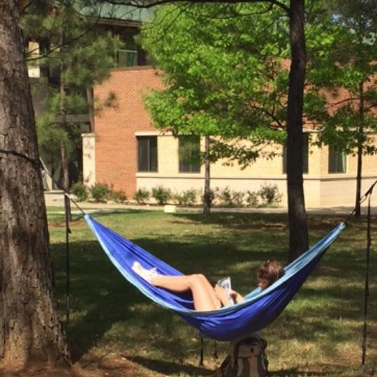
The library, especially around exam time, can be loud and crowded with friends who can distract you. Take your books outside and enjoy the beautiful scenery around campus.
3) Review class notes on HemiNotes before class.

Suck at playing attention in class? Check and see if
HemiNotes has notes for your class prior to attending. With HemiNotes, you can make an outline of what should be covered that day to stay on top of important topics or ideas.
4) Hit up Goodwill on Main Street for themed parties.

If you’re a fan of Greek life, themed parties can take a hit on your bank account. Avoid inevitable poverty by doing some Goodwill hunting (pun intended) or shopping Walmart for great deals after Halloween.
5) Do your laundry on weekdays not weekends.
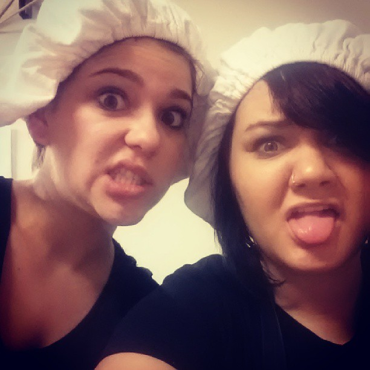
Victoria Nicole, SFA student -
"Don't attempt to do laundry on Sunday.. Monday and Tuesday's are the best days to do laundry.”
Laundry can be an all-day event but it’s worse if you’re waiting on an open washer or dryer. Find a day during the school week when classes end early and knock out laundry then.
6) Take the elevator in the Liberal Arts building when you’re running late to a class in Ferguson.
Things can get too close for comfort on the Fergy elevators, making you late for class. Take the spacious elevators located in the Liberal Arts building and beat the traffic by crossing the sky bridge into the Ferguson building.
7) Broke with no food? Visit the Food for Thought pantry.
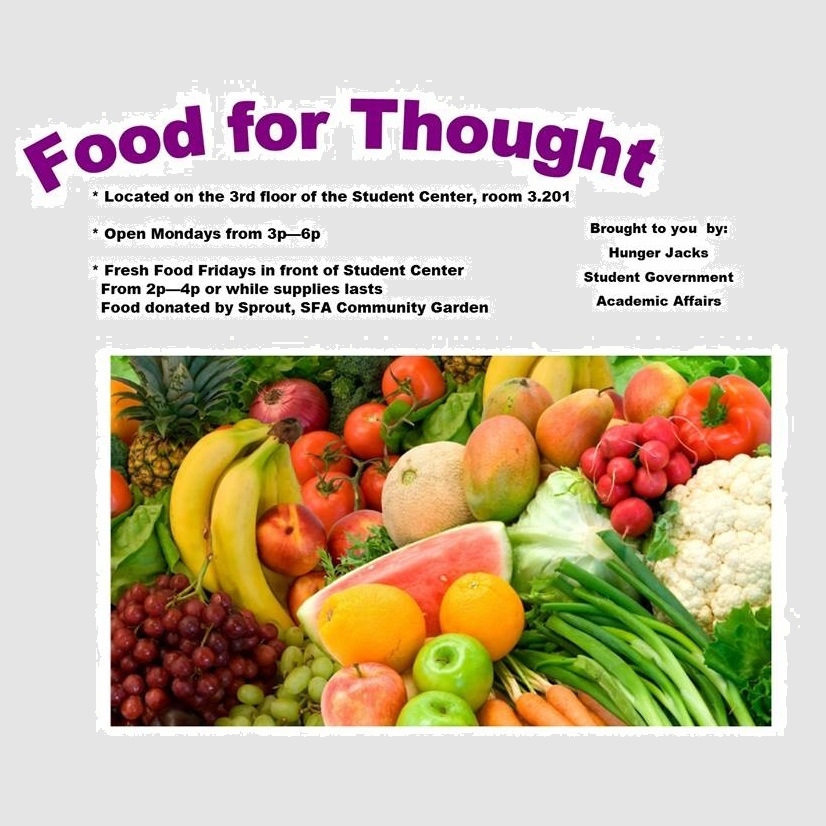
This is super cool. Students can donate food to their peers when they're strapped for cash or the cafeteria is closed.
8) Go camping for cheap.
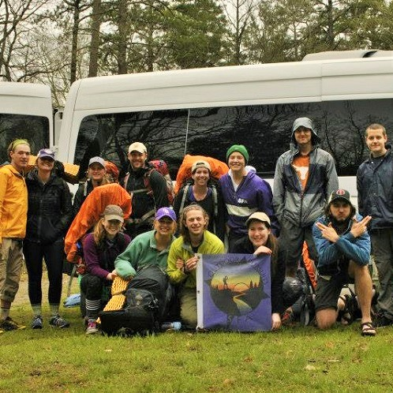
Unless you plan to build a cabin next to JJ Watt’s, don’t buy camping gear. Rent it out for cheap at the SFA Rec Center.
9) Take more to-go cafeteria food than you need for late night dorm snacking.
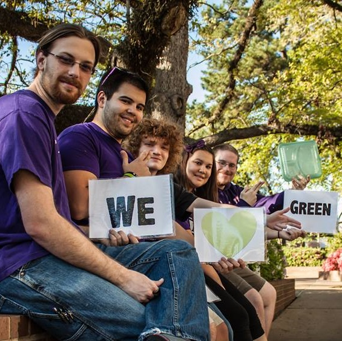
SFA cafeteria desserts are the bomb. When you pack food for the go, take more than you need for next day noms.
10) Bring a pack of cards to every party.
Cards Against Humanity or poker cards can be just what you need to make a party more exciting.
11) Go to Sunshine Mart for the best deals on adult beverages.
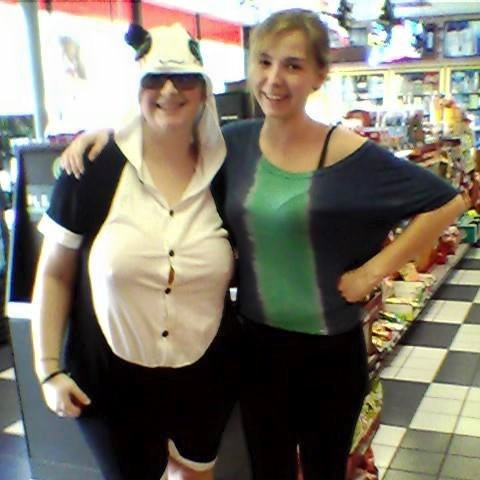
Sunshine Mart on North Street typically has good prices on all kinds of things. But every now and then, they will post ridiculous discounts on overstocked brew.
12) Join SFA Craigslist.
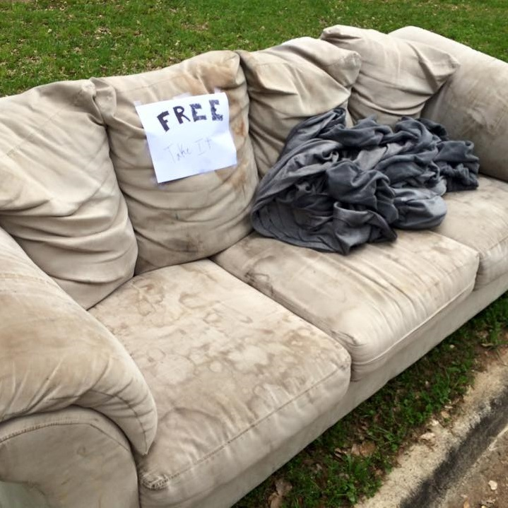
Looking to find or sell affordable furniture, textbooks or clothes? Look no further than here -
SFA Craigslist.
13) Rent a house not an apartment.
With the help of some steady friendship you can find yourself sharing a grand ol’ house for a silly low price. During my senior year of SFA, I shared a house with 3 fraternity brothers for the reasonable price of $225 per month plus utilities.
14) Buy drunk food before the party.
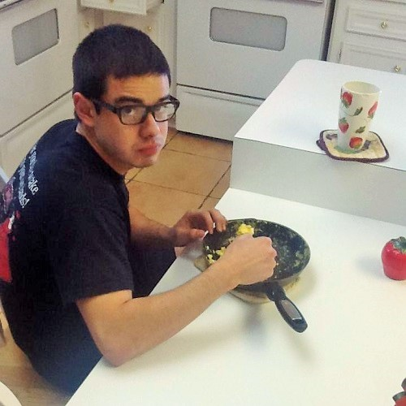
For some reason, they only bring out the 5-star chefs at Taco Bell after 3 a.m. While fast food can taste great after a party, stuffing your fridge with microwavable goodies can be less stressful on your bank account. Lean Cuisine meals, popcorn and leftover pizza can stretch the dollar and not your waistline.
15) Bring a dog to tailgate (this one is for the guys.)
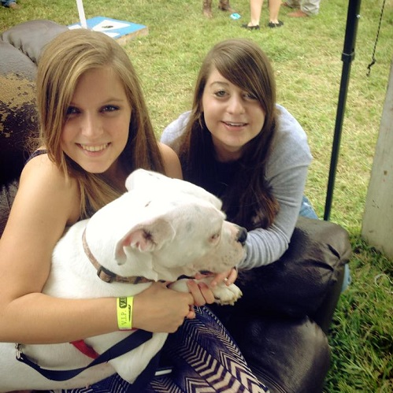
Did you know that walking a dog makes you more attractive? Every girl loves a good dog.
16) Need help with D2L? Call 936-468-1919.
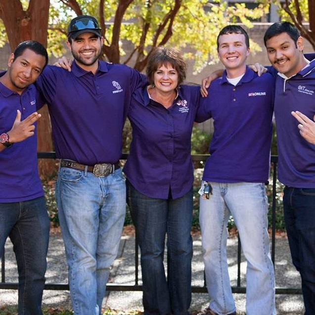
HemiNotes founder Eric Nambo sort of runs the show at D2L. Complain at him directly with this convenient phone line.
17) Bike to campus for hassle-free parking.
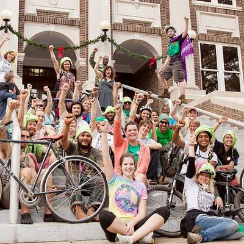
I tried to include a hack about campus parking but I have none. Avoid tears of tardiness by renting or buying a bike to ride to class.
18) Rent your textbooks for less than $5 a day.
If you have a class that requires very little need of your textbook, search for it on
PackBackBooks.com. They help students rent textbooks online for super cheap.
19) Take Pearl Street to avoid UPD and red lights.
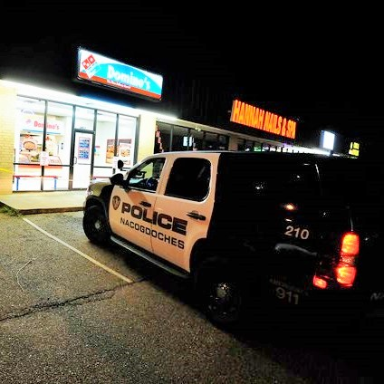
Hannah Ward, SFA student -
"Take pearl street to avoid the 500 red lights on north street!" Truer words have never been spoken.
20) Call UPD if you’re locked out of your car.
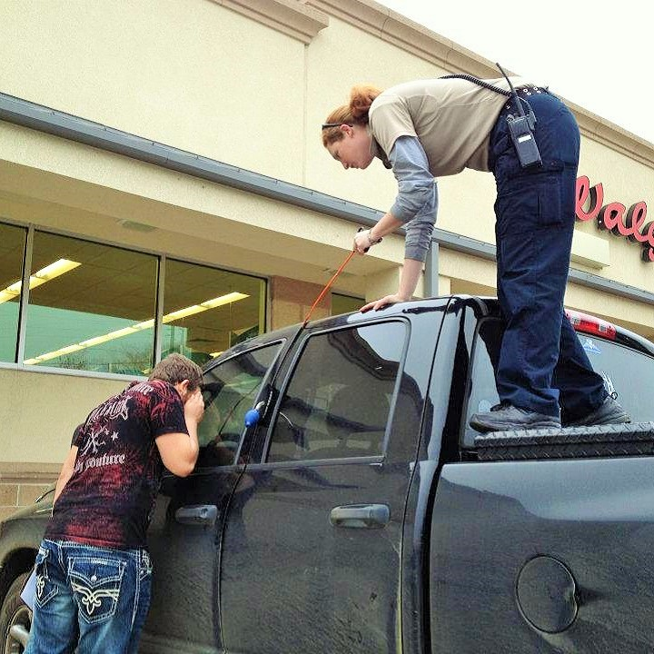
The good people of UPD will actually help you bust into your car if you’re locked out and near campus. They will also jumpstart your car too.
21) Know the local bar/restaurant specials.
There's a ton of local specials around Nac. Here's a few:
•
Mondays - $1.50 tacos at Fuzzy's Tacos
•
Tuesday - $0.25 margaritas at Pasados
•
Wednesday - Big Ass Glass Night at BullFrogs
•
Thursday - $1 single wells (after 8 p.m.) at Flashbacks Cafe
•
Friday - $2 domestic long necks at Headliners
•
Saturday - Concerts at Liberty Bell and/or Banita
•
Sunday - $3.25 domestic drafts at Macklemore's
About HemiNotes:
HemiNotes was designed to help SFA students share and compare class notes online. Learn more »